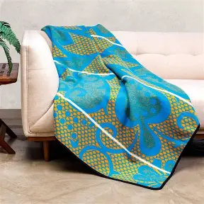
Basotho Blanket
A thick woolen blanket worn for warmth and cultural symbolism. Patterns reflect status and occasion.
Learn more
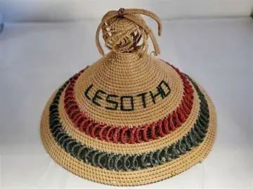
mokorotlo
A head that is artifitially made up by natural grass called MOSUOA it is mostly worn by Males in special occasions like caltural events
Learn more
mose oa khomo
a dress that is worn by women mostly after tradiotional school for young women
Learn moreseanamarena
Type of basotho blanket that is either worn by men of women depending on occasional attendence
Learn more
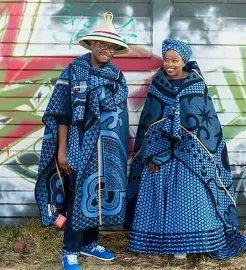
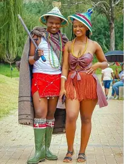
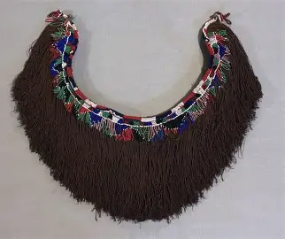
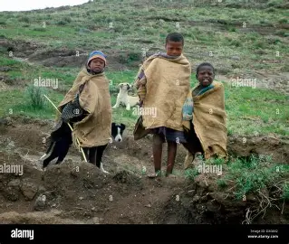
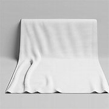
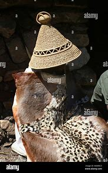
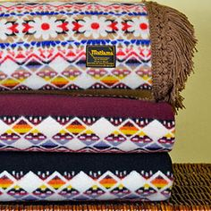
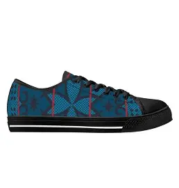
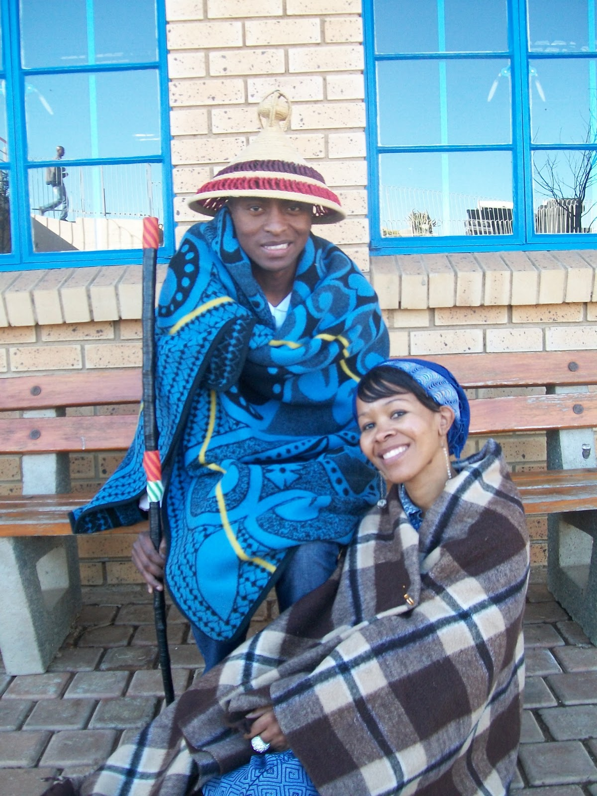

Tjs'ets;e
made of natural gras usually worn by men
Learn more

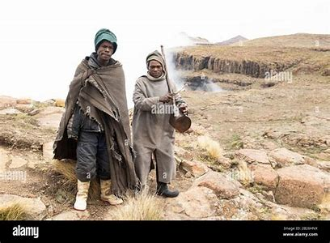
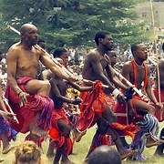
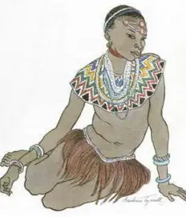
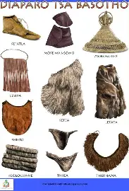
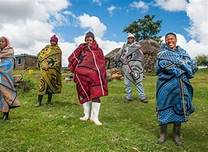
Seanamarena
Worn by all basotho men and women usually in special occasions like Wedding act.
Learn more
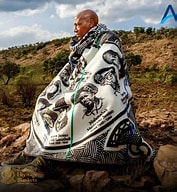

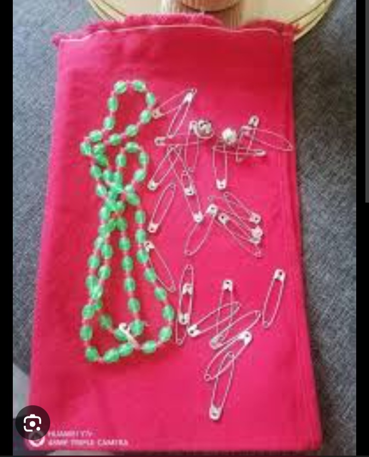